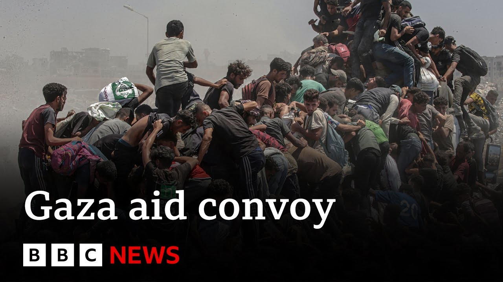

【BBC News 20250728 约旦和阿联酋开始向加沙空投援助物资】
Summary: Aid drops and land deliveries begin in Gaza as Israel implements tactical pauses to address starvation crisis, despite ongoing violence and access challenges.
摘要： 加沙开始空投和陆路援助物资，以色列实施战术暂停以应对饥饿危机，但暴力和准入挑战仍在持续。

⏱️ Estimated Reading Time: 18 min.
📚 四级生词 📚 六级生词 📚 雅思生词 📚 托福生词 📚 专八生词 📚 SAT生词 📚 考研生词 📚 GRE生词 📚 高考生词 📚 其它生词
We begin in Gaza where aid drops have begun over the territory.
我们从加沙开始报道，那里已开始空投援助物资。
Jordan says it's parachuted 25 tons of aid into Gaza.
约旦表示已向加沙空投25吨援助物资。
Israel says it has air dropped aid too and lorries carrying supplies have begun entering from Egypt after Israel opened a number of border crossings.
以色列表示也进行了空投，并在开放部分过境点后，载有物资的卡车开始从埃及进入加沙。
The developments come after the Israeli military announced a tactical pause in three parts of Gaza to allow food and medicine to be distributed.
此前，以色列军方宣布在加沙三个地区实施战术暂停，以便分发食品和药品。
Those areas are Al-Mawazi, De Albala, and Gaza City.
这些地区包括马瓦西、代尔巴拉和加沙城。
Aid agencies have been warning that mass starvation is taking hold in Gaza with the health ministry there saying six more people have died from malnutrition, bringing the total to 133, including 87 children.
援助机构警告称，加沙正陷入大规模饥荒，当地卫生部表示又有6人死于营养不良，总数达133人，包括87名儿童。
Medical officials also say at least nine Palestinians were killed and 54 others wounded in an Israeli shooting, apparently targeting civilians gathered at an aid convoy route in central Gaza.
医疗官员还表示，以色列军队在加沙中部一条援助车队路线上开枪，造成至少9名巴勒斯坦人死亡、54人受伤，目标显然是聚集的平民。
The BBC and other international news organizations are prevented from reporting inside Gaza by the Israeli government.
以色列政府禁止BBC等国际新闻机构在加沙境内报道。
Amir Nada sends this report from Jerusalem.
阿米尔·纳达从耶路撒冷发回报道。
Footage released by the Israeli military showing its planes dropping seven packages of aid into Gaza.
以色列军方发布的画面显示，其飞机向加沙空投了7包援助物资。
where 2 million people are facing a hunger crisis.
当地200万人正面临饥饿危机。
Jordanian and Emirati planes are expected to follow.
约旦和阿联酋的飞机预计也将跟进。
Humanitarian agencies have called airdrops a distraction that what's needed to loosen the deadly grip of starvation are not planes but for Gaza to be flooded with aid by land.
人道主义机构称空投是转移注意力，真正需要的是通过陆路向加沙大规模输送援助，而非飞机。
When aid is air dropped, it causes injuries and damage.
空投援助会造成伤害和破坏。
They cause massacres on the street.
它们会在街头引发惨剧。
We are coming here for death.
我们来这里是为了死亡。
All these people, the people who die every day, if one, two or 10 boxes are dropped, all these people cannot take them.
每天都有这么多人死去，即使空投一两箱或十箱物资，这些人也无法拿到。
Only one or two% of people get the aid.
只有1%到2%的人能得到援助。
Today, Israel also announced it would implement humanitarian corridors for aid distribution by land, addressing a key demand from aid agencies that the military allows the safe passage of trucks following repeated deadly incidents in which they accuse the Israeli military of shooting Palestinians crowding the convoys.
以色列今天还宣布将开辟陆路援助走廊，以满足援助机构的核心要求——在多次致命事件后确保卡车安全通行。援助机构指责以军向围聚车队的巴勒斯坦人开枪。
But already today, as footage showed trucks at the border firing up their engines and moving through the Arafa crossing into Gaza, at one hospital, medical officials said at least nine people were killed when Israeli troops shot at Palestinians waiting for a convoy.
但就在今天，尽管画面显示卡车在边境启动引擎，通过阿拉法过境点进入加沙，但一家医院的医疗官员称，以军向等待车队的巴勒斯坦人开枪，造成至少9人死亡。
The Israeli military has been reached for comment.
已联系以色列军方置评。
It has previously said it uses only warning shots.
以方此前表示仅使用警告性射击。
The way of aid is very harmful and dangerous.
这种援助方式非常有害且危险。
But we go out for the sake of children because a child cries telling you, "Uncle, I want a loaf of bread.
但我们为了孩子冒险，因为孩子哭着说'叔叔，我想要一块面包'。
It breaks your heart.
这令人心碎。
It feels like a million knives into your heart.
感觉像百万把刀刺进心脏。
What will now determine the fate of thousands of gazins standing on the edge of starvation are how many trucks Israel allows in, how safely, and for how long.
现在决定数千濒临饥饿的加沙人命运的是以色列允许多少卡车进入、安全性如何以及持续多久。
Emmy reporting from Jerusalem.
埃米从耶路撒冷报道。
Let's also speak to our correspondent Hugo Basha who's in Jerusalem.
我们连线在耶路撒冷的记者雨果·巴沙。
Hugo, what sense do we get of how much aid has managed to get in?
雨果，目前有多少援助物资成功进入？
Yeah, Karen.
是的，凯伦。
So, we had this report from the Jordanian officials saying that 25 tons of aid have been air dropped uh in the latest round of of these uh kinds of operations over Gaza.
约旦官员报告称，最新一轮行动中已向加沙空投25吨援助物资。
uh this was a fresh round of air jobs by Jordan and also by the United Arab Emirates and we've seen that trucks are now entering Gaza.
这是约旦和阿联酋的新一轮空投，且卡车正进入加沙。
So obviously there has been this uh you know significant announcement by the Israeli military after days of uh dire warnings by aid organizations by the United Nations of mass starvation in Gaza because they say of restrictions that had been imposed by the Israeli military on the entry and delivery of aid uh into Gaza.
显然，在援助机构和联合国多日警告加沙将爆发大规模饥荒后，以色列军方做出了重要宣布。他们指责以军限制援助进入和分发。
So we still don't have a clear picture of how much aid has now entered Gaza.
目前尚不清楚有多少援助进入加沙。
But again, what aid agencies are saying is that they are ready uh to uh you know, deliver aid to the population of Gaza.
但援助机构表示已准备好向加沙民众提供援助。
As we've seen, there have been, you know, those images of emaciated children, reports of uh Palestinians uh starving to death, accounts of people fainting from hunger, you know, all these reports uh you know, causing you know, shock and outrage around the world.
我们看到瘦弱儿童的照片、巴勒斯坦人饿死的报道、人们饿晕的叙述，这些引发全球震惊和愤怒。
So, putting a lot of pressure on the Israeli authorities.
这给以色列当局带来巨大压力。
And finally, yesterday this announcement by the Israeli military, a number of measures to try to ease the worsening humanitarian crisis in Gaza.
最终，以色列军方昨天宣布多项措施以缓解加沙恶化的人道危机。
But again, what aid agencies have been saying is that particularly, you know, the air drops, this is a desperate measure really to try to get aid to those who need in a very quick way.
但援助机构强调，空投是快速援助的无奈之举。
But they say that this is not going to solve the crisis that you know what is important here is for a significant amount of aid to be allowed to enter Gaza uh you know by land you know by hundreds of trucks who are now uh you know trucks that are waiting uh to be allowed into Gaza for this aid to be sent to those people who need in Gaza.
他们表示这无法解决危机，关键是要允许大量援助通过陆路进入加沙，目前数百辆卡车正等待进入。
Hugo, what do we know about these pauses in fighting that Israel has announced?
雨果，以色列宣布的战术暂停具体是什么？
And how different is that to the ceasefire that so many have been calling for?
与各方呼吁的停火有何不同？
Exactly.
确实。
And the ceasefire, you know, a deal between Israel and Hamas is the main hope here for uh, you know, for more aid to be, you know, delivered to the population of Gaza.
以色列与哈马斯达成停火协议才是向加沙民众输送更多援助的主要希望。
So this is a decision that has been uh announced by the Israeli uh military pauses uh in fighting in parts of Gaza.
这是以色列军方宣布在加沙部分地区暂停战斗的决定。
Uh we've seen also that some corridors are going to be created for UN convoys uh uh to be able to deliver food and and medicine.
还将为联合国车队开辟走廊以运送食品和药品。
And I think uh the significance here is that this is I think you know a response uh by the Israeli authorities to growing international pressure given you know everything that has emerged from Gaza in the last few days and warnings of mass starvation in Gaza.
我认为这是以色列当局对国际压力的回应，特别是加沙近日状况和饥荒警告。
So a significant development that uh you know there will be uh you know pauses in military operations by the Israeli military.
以军暂停军事行动是重大进展。
The statement by the Israeli army uh yesterday said that they will continue with their operations against Hamas in Gaza, but that there will be pauses, tactical pauses as they call it, uh to allow you know aid organizations, the United Nations uh uh you know to access those uh areas in Gaza, especially those densely populated areas uh in central Gaza also on the coast of the territory uh for aid to be given to those people uh in Gaza.
以军声明称将继续打击哈马斯，但将实施所谓"战术暂停"，以便援助机构和联合国进入加沙中部和沿海人口密集区分发援助。
Hugo, thanks very much.
非常感谢，雨果。
Hugo Basha reporting live from Jerusalem.
雨果·巴沙在耶路撒冷的现场报道。
Let's speak to Immad Kudai who's a local journalist in Gaza.
现在连线加沙当地记者伊马德·库代。
Immad, thank you for waiting to talk to us.
伊马德，感谢等候连线。
Tell us the situation where you are.
请介绍当地情况。
Well, the situation is not that much different actually, but let us say that today is better than the last time I appeared here in an interview to BBC News Channel.
总体变化不大，但比上次接受BBC新闻频道采访时稍好。
people are still suffering from starvation, but right now the situation is a little bit better.
人们仍在挨饿，但当前状况略有好转。
Maybe you managed to get a piece of a bread at the moment after allowing hundreds of attractive food and other uh medical uh supplies to be reached in Gaza because today after the Egyptian side took the permission of Israel and after the humanitarian troops, Israeli military forces started to announce in too many places here in Gaza like Alawasi the west of where I talked to you from and Jerah and Gaza city.
可能因为埃及获以色列许可后，数百车食品和医疗物资进入加沙，以军还在马瓦西、杰拉和加沙城等地宣布人道措施。
So the situation is started to be good a little bit but the problem that we face due to the huge number of hungry people following the trucks wherever they go when they uh get their path to the stores of the humanitarian organizations is still the same.
情况开始好转，但大量饥饿人群尾随卡车前往援助组织仓库的问题依然存在。
A lot of the trucks have been seized by huge numbers of hungry people and thieves here you know like uh groups of thieves are attacking those trucks.
许多卡车被饥饿人群和盗匪劫掠。
So they do not get the chance in order to be saved in the stores of the humanitarian organizations until they distribute them between the people need in too many places and a huge number of people are in need to those trucks.
卡车无法安全抵达仓库，只能在各地直接分发给民众。
So today really good news we got from the Egyptian uh really crescent which is uh in the few coming days they are going to allow more and more trucks to be reaching Gaza which is going to decrease the volume of the starvation we started to suffer from in the uh last days recently and you know like uh the name of this uh you know convoy is a bride food from Egypt to Gaza something else we can describe and we have seen by our eyes from here the sky of Al Moasi The humanitarian planes are dropping eight in the sky of Alawasi.
埃及红新月会称未来几天将允许更多卡车进入加沙，这将缓解近期饥荒。我们看到马瓦西上空有人道主义飞机空投物资。
We have seen too many planes coming.
我们看到许多飞机到来。
But the problem is the most of those uh you know packages have it dropped from the sky did fall in uh militarized places where if you go there you will put yourself in a very big risk and uh those places are evacuated under the Israeli control.
但多数空投物资落入军事区，前往极其危险，这些区域处于以色列控制下。
So it's really risky to go to those places where the packages uh from the planes uh fell down.
前往空投物资落点非常危险。
Right.
明白了。
So you are seeing aid being dropped from the sky.
你们看到空投援助。
But what you're saying is where that aid lands isn't always possible for people to get to safely.
但你说民众无法安全获取这些物资。
Well uh you know because of a lot of hungry people we do not to blame them actually because some families and thousands of families did not manage in the last maybe month or the last two months to get a piece of a bridge.
我们不应责备饥饿人群，因为许多家庭过去一两个月连一块面包都得不到。
So this is understandable for people suffering from starvation for a long time to go there.
长期饥饿的人们这样做可以理解。
But the problem is some of the thieves you know those thieves are maybe sometime militant.
但问题是有些盗匪可能是武装分子。
they they attack the tracks and those things should be controlled by the permission will be taken from the Israeli military forces.
他们袭击卡车，这种情况需要以色列军方批准才能管控。
What is this what this permission is about is to provide the protection units of Gaza the security guards to to to go and say secure those tracks to be reaching the stores of the humanitarian organization safely because whenever those protection units abuting the front of the drones of the Israeli mil forces they have been targeted many times.
需要以军批准加沙安保人员护送卡车安全抵达仓库，但这些安保人员多次遭以军无人机攻击。
Right now it is very difficult with no taking the permission from Israel to protect those trucks again because the security guards I mean the protection units are afraid of this kind of step.
目前未经以军许可很难提供保护，因为安保人员害怕这样做。
Immad, what has it been like personally for you to get access to food over recent days?
伊马德，你个人近日获取食物的情况如何？
How difficult has it been?
有多困难？
You know, it's like something I miss so much actually.
我非常想念某些食物。
some types of food.
某些食物。
Still, you know, the prices are really high when you go to the market because some of the merchants started to get uh the goods they have hidden for a long time in order to control the high prices here in the market.
市场价格仍很高，因为商人囤积货物以操控价格。
But right now, we can manage a little bit food from the community kitchen.
但现在我们能从社区厨房获取少量食物。
Sometimes some initiatives here in my camp have been run uh you know have been uh you know run uh by by some of the charity workers.
有时营地里的慈善工作者会组织活动。
So we we managed to get a piece of a bread after a long time and that was really very happy moment like my my stomach did not receive those kind of uh this kind of a bread for a long time.
我们终于得到一块面包，这是非常开心的时刻，因为我的胃很久没接触这种面包了。
So today I started to feel a little bit energy in my body.
今天我开始感到有些力气。
I can focus I can do my reports uh with no feeling dizzy as what I suffered from for the last two weeks maybe.
我能集中精力做报道，不再像过去两周那样头晕。
Immad thank you very much for talking to us.
非常感谢，伊马德。
Immad Kai speaking to us there from Gaza.
加沙的伊马德·凯的报道。
Well, our Gaza correspondent, Rushi Abu Aluf, who is in Cairo, gave us more details on the Israeli air strike that hit western Gaza just hours after that humanitarian pause began.
本台加沙记者鲁希·阿布·阿卢夫在开罗详细报道了人道暂停开始几小时后，以色列空袭加沙西部的情况。
Yes, according to witnesses, an apartment block, a flood was hit by an at least one rocket according to witnesses and local journalist in in Gaza.
据目击者和加沙当地记者称，至少一枚火箭弹击中一栋公寓楼。
Well, now the Shifa Hospital, the main hospital in Gaza, just released a statement saying a mother and four of her children were killed in the air strike.
加沙主要医院希法医院声明称，空袭造成一名母亲和她的四个孩子死亡。
The circumstances around the strike isn't clear yet and what and we don't know yet what is the target, but the outcome is that five people were killed, four children and a woman.
空袭具体情况尚不清楚，但结果是五人死亡（四名儿童和一名女性）。
According to the hospital, about 20 people were uh injured because the debris were flying in a nearby small bakery shop where people were queuing to bake some of the uh bread that they have made at home.
医院表示约20人受伤，因为弹片飞入附近一家小面包店，当时人们正排队烤制家中的面包。
Uh this is just about 1 hour after the tactical pose announced and it's in the western side of of Gaza city in the heart of Gaza city an area not classified one of the places where Israel asked people to leave not not red area according to the map published by the Israeli armed spokesman this morning.
这是在战术暂停宣布后约1小时，位于加沙城西部的加沙市中心，该地区未被列为以色列今早发布的武装发言人地图中要求人们撤离的红色区域。
So it is significant because people were a little bit relaxed in the morning.
这很重要，因为人们早上稍微放松了一些。
They thought that the ceasefire will be holding.
他们认为停火会持续。
They were trying to go to the market to see if there is any food available, but they were surprised by the air strike.
他们试图去市场看看是否有食物，但空袭让他们感到意外。
Rushi Abu reporting from Cairo.
鲁希·阿布从开罗报道。